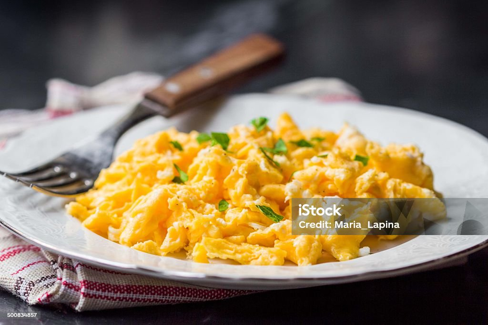

Home
Scrambled eggs

Description
Scrambled eggs are a classic, versatile breakfast dish made by whisking eggs together and cooking them over gentle heat. As they are stirred in the pan, the eggs form soft, creamy curds that can range from light and fluffy to rich and custardy. Seasoned simply with salt and pepper, they are a staple comfort food valued for their quick preparation and delicate texture.
Ingredients
- Eggs
- Butter or oil
- Milk or heavy cream (optional)
- Salt and black pepper
- Fresh chives (optional garnish)
Steps
- Whisk the eggs in a bowl with salt, pepper, and a splash of milk until well combined.
- Melt butter in a non-stick skillet over medium-low heat.
- Pour the egg mixture into the pan and let it sit for a few seconds until the edges begin to set.
- Gently pull and fold the eggs with a spatula, creating large curds as they cook.
- Remove from the heat when the eggs are mostly set but still look slightly moist.